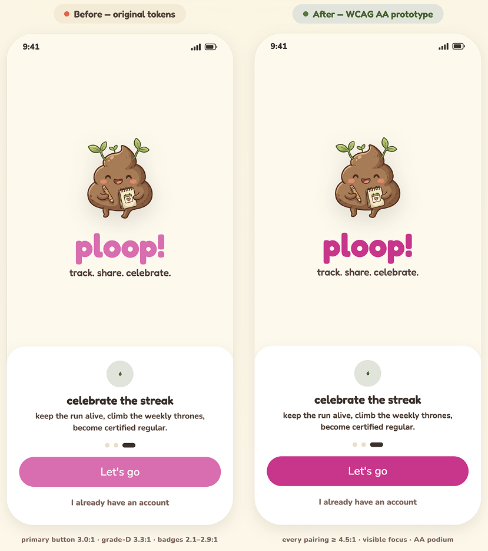

A lighthearted, social utility app that turns the clinical chore of health-habit tracking into a delightful, close-friends game — designed and handed off to development in just 3.5 weeks with AI co-pilots.
01 — Overview
Tracking daily health habits is usually clinical, solitary, and boring. ploop! transforms this mundane routine into a delightful, shared experience through playful "poop grading," custom status logs, and a private, close-friends social feed.
The idea came from a real behavior I'd noticed in my own life: my friend group already trades bathroom updates as running jokes in our group chat — latent social energy no existing app had captured. I leaned into a deliberately taboo, low-stakes domain on purpose, because it doubled as a testbed for a second question: could AI co-pilots compress a traditional three-month, zero-to-one mobile lifecycle into a matter of weeks — without sacrificing craft, accessibility, or user trust?
A designer and developer used AI co-pilots to compress a traditional 3-month mobile app lifecycle into just 3.5 weeks — building a lighthearted, social utility app for tracking health habits. My role shifted from pixel-pushing to high-level strategic direction, curation, and rigorous critique of AI output.
02 — The Problem
Most health-habit tracking is built like a medical chore — clinical forms, lonely charts, and no reason to come back. People log for a few days out of novelty, then quietly quit. The behavior that actually sticks in real life isn't solo and serious; it's social and a little silly.
Daily health-habit tracking is clinical, solitary, and forgettable. Existing apps frame it as a medical task, so motivation collapses within days and the habit never sticks.
Keep a daily habit going with close friends — fast, lighthearted, and a little competitive — without charts, streak-shaming, or sharing anything personal in public.
Maya keeps her five-person friend group glued together over text — memes, daily check-ins, inside jokes. She's tried streak apps and a couple of wellness trackers, but always drops them within a week. She doesn't want another health app; she wants something fun to do with her people.
"I'll do almost anything if my friends are doing it too — but it has to be fast, and it has to be funny."
03 — Strategy
Habit tracking typically feels clinical or isolating. We wanted to see if we could pivot a taboo health habit into a low-stakes social game. To move at speed, I ran a dual-AI pipeline — ChatGPT for market research, Claude for structural scoping — while acting as the core product manager and curator.
I began by benchmarking existing platforms to find the exact gap in the market, prompting ChatGPT to analyze the strengths and weaknesses of current poop-tracking apps.
"I'm designing a lighthearted, social poop-tracking app — a habit game, not a medical tool. Audit the most popular poop-tracking apps: for each, give me its core positioning, strengths, and weaknesses. Then group them into categories and pinpoint the clearest gap I could own — where today's users are underserved."
Plop, Happy Poop, Poopify
Excellent medical utility (Bristol scale, symptom charts), but sterile UI and zero entertainment value. Appeals heavily to users with gut-health conditions like IBS.
Poop Map
Strong social engagement (1M+ downloads) via location tagging and friend leagues — but thin on depth and personalization once the novelty wears off.
Number Two
Beautiful UI and extremely fast logging, with a "Throne Room" leaderboard. But social features feel secondary and the personality stays muted — proof that people crave frictionless logging.
Mapping the named leaders against their categories made the open lane impossible to miss:
| Category | Existing Leaders | Status |
|---|---|---|
| Medical & IBS tracking | Plop, Happy Poop | Saturated |
| Location tracking | Poop Map | Saturated |
| Private / frictionless logging | Number Two | Saturated |
| Social habit game | — | Wide open ← |
The reframe that unlocked everything: almost every poop app asks "How is your digestive health?" — very few ask "How do we make pooping fun?" ChatGPT named the whitespace precisely: "Strava meets Duolingo meets Letterboxd, but for pooping." The bet wasn't a better medical tool — it was a social habit game that happens to be about pooping. The evidence already pointed there: users of existing apps consistently engage with friend leagues more than the health tracking itself.
A market gap is a hypothesis, not a green light. Before committing to any feature set, I ran 9 informal interviews with people in the target demographic — friend groups in their early 20s — to pressure-test whether the social-game premise actually resonated, and to hear, in their own words, which features they'd genuinely use versus dismiss as gimmicks.
"Honestly? I'd download it for the group-chat chaos, not my gut health."
— Maya, 24
"If logging takes more than ten seconds, I'm out. I'm not journaling."
— Devin, 22
"No chance I'm posting that publicly. But to my close friends? That's comedy."
— Priya, 25
A few priorities surfaced again and again — and they became the backbone of the MVP. This is the moment the feature list stopped being my guesses and started being theirs:
| What I heard | How it shaped the MVP |
|---|---|
| "Speed, or I won't bother." | Quick Log became the hero — a center-screen button and an under-30-second flow. |
| "Only with close friends — never publicly." | A friends-only feed with opt-in sharing; the global public feed was cut to V2. |
| "The competition is the whole point." | The weekly "Throne Room" leaderboard earned a permanent spot as a core tab. |
| "I want to see my own streaks." | History & calendar prioritized for private, personal tracking — separate from the social feed. |
With the positioning validated by both the market audit and real user signal, I translated the priorities into a functional, shippable scope for a lean two-person team. Claude was a fast brainstorming partner for gamification mechanics — but my job was to protect the engineering timeline and stay honest to what users actually told me they wanted. I applied a strict human filter, sorting features into launch phases.
Claude generated 15 distinct feature vectors. My role was to act as the product curator — evaluating each suggestion through a lens of strict UX feasibility and human empathy. A few representative calls:
Highly invasive and causes immediate social friction — the kind of feature that gets an app deleted within a day. Cut entirely.
Too clinical — it turns the app into an exam. I pivoted it to a subjective, playful "Poop Grade" (A+, B−, "The Masterpiece") that users self-select or let a fun prompt decide. Kept the engagement hook, dropped the judgment.
Exactly right — it minimizes social anxiety and guarantees a psychologically safe space. This became the backbone of the entire feed model.
The biggest UX risk was the privacy barrier. To make users feel safe in a social app about bowel movements, I set two non-negotiable guardrails:
Within 48 hours I synthesized our AI conversations into a comprehensive product spec, anchored by a 5-tab architecture with a prominent center-floating action button for logging.
04 — Visual Identity
Setting the right tone was a tightrope walk. Too sterile and it reads as a medical app; too loud and it looks childish. My goal was a "sophisticated cute" aesthetic — using structural typography to carry the playful energy so the palette and UI could stay clean, minimal, and modern.
I first asked Claude to explore visual directions for a "cute and lighthearted" app. It returned three generic archetypes — Pastel Playground, Earthy Wit (leaning into literal browns), and Neon Soft. I rejected all three; the AI was relying on obvious tropes.


Claude's three opening directions — predictable tropes: literal browns, kids'-book pastels, and a generic "Gen Z" neon. None earned the "sophisticated cute" brief, so I rejected the batch.
Recognizing the limits of AI moodboarding, I took over creative direction. I sourced real-world color inspiration on Pinterest, brought swatches into Figma, and manually tuned a vibrant, eclectic palette anchored by a rich, grounded base — balancing deep organic dark tones with saturated, energetic pops. I swapped a warm yellow-beige background for a crisper, cooler-toned light cream to keep things fresh.
For type, I paired Fredoka One (display) with Nunito (body). Fredoka's roundness does the heavy lifting of looking "cute," so the layout itself can stay modern and structured — no loud graphics required.

The final system I built in Figma — a Fredoka One / Nunito type scale paired with a grounded dark-brown base (#3C302B), a crisp cream canvas (#FEF9EB), and saturated accents in bubblegum, coral, forest, sky, and amber.
With the visual foundation set, I compiled the design brief, color tokens, and a custom onboarding illustration into one package and fed it to Claude Design to generate the initial components. It mapped a full UI kit at lightning speed — but its execution lacked product maturity, falling into the trap of excessive decoration.
The initial output was flooded with emojis in every text string, heavy drop shadows, and glossy button highlights. It looked juvenile — exactly the vibe I wanted to avoid.
I issued a strict course-correction prompt to strip the fluff and inject a more minimal, high-end mobile aesthetic:
"This reads juvenile — it's over-decorated. Strip it back toward a minimal, high-end mobile aesthetic where the personality comes from the type and mascot, not ornament. Specifically: no emojis in app copy (reserve them for feed reactions only); remove the glossy highlights on grade bubbles and buttons; cut the heavy drop shadows; and in the bottom nav, replace the emojis with clean line icons — including a distinct icon for the center 'log a ploop' button."
Holding the line on execution quality, the revised system captured exactly the personality I envisioned: a flat, clean aesthetic with micro-elevation, heavier font weight on buttons for clear tap targets, and a witty, conversational tone that hypes the user up like a friend in a group chat.


The refined system in Claude Design — flat color tokens, the A–F grade spectrum, a disciplined Fredoka/Nunito type scale, "lil ploop" as the mascot, and a playful, never-medical voice ("A+ morning, legend" over "Bowel Movement Successfully Recorded"). Note the guardrail baked into the brief: no emoji in copy — the mascot, color, and tone carry the warmth instead.
05 — Wireframing
With the visual system locked, I used Claude Design as a high-speed production assistant — exploring layout variations simultaneously rather than sketching screen by screen. I prioritized the four foundational screens: Onboarding, Social Feed, Leaderboard, and the "Log a ploop" flow.
Instead of asking for a single "perfect" screen, I prompted Claude to generate three distinct layout variations for each core screen, each with its own pros-and-cons list.
This structural sandbox dramatically compressed iteration time. Sometimes a single direction was an immediate winner; other times I merged the strongest elements of several until the layout matched the product goals exactly.


Three labeled directions for each core screen — Onboarding, Social Feed, Leaderboard, and the Log flow — each annotated with pros, cons, and the rationale behind my pick (tagged "your pick").
06 — Deep Dive
While the core flows fell into place quickly, the History (Calendar View) tab posed a real challenge: a high-level monthly overview had to track three data layers at once without cluttering the screen.
The initial concept used colored dots where circle size was proportional to logging frequency. I quickly spotted the flaws: it was subjective, added visual noise, and forced users to guess the mathematical ratio between one log and three.
I challenged Claude to bypass the proportional-dot logic and explore a broader spectrum of data-visualization styles. It returned a matrix of alternatives:

Seven directions for encoding three data layers in one calendar cell — per-log pips, dot + numeral, tally bar, corner badge, hand-tally ticks, and the two tinted-cell finalists. Option F (tinted cell + number) won: the background tint turns the whole month into a readable color map, while the count pill stays quiet until it's actually needed.
07 — Hi-Fi & Accessibility
With the structure in place, I moved into high-fidelity prototyping — balancing design goals against engineering constraints through a continuous feedback loop with my developer partner.
AI could generate options, but only real people could tell me whether a social app about poop would actually feel safe and fun. So before hardening anything, I ran a scrappy round of guerrilla testing — a clickable prototype put in front of 7 people in the target demographic (early-20s, all active in group chats). It wasn't a formal study, but it changed real decisions:
To maximize delivery speed and minimize platform costs, I actively consulted my developer on implementation complexity. During onboarding, for example, we chose classic email-and-password authentication over SMS verification. SMS offers lower friction, but introduces ongoing operational API costs — auditing this early preserved our budget and kept the MVP lean and shippable.
Vibrant, eclectic palettes frequently compromise legibility. I leveraged Claude to run a comprehensive WCAG 1.4.3 color-contrast audit across our active tokens. Its verdict: our foundations were "mostly, but not fully" passing.
Dark headings on a light cream canvas scored a powerful 12:1 ratio, and dark ink typography over light sky and amber grade bubbles cleared comfortably.
Vibrant accents carrying white text failed AA. The white-on-bubblegum CTA sat at an unstable 3.0:1, while white-on-sky and white-on-amber dropped as low as 1.6:1.
Rather than abandon our playful identity, I directed the AI to systematically calculation-tune our color tokens — deepening only the accents that carry text, while leaving the light background surfaces and empty canvas untouched.
We mathematically re-engineered the palette to safely cross the 4.5:1 AA threshold across every interactive component:
| Token | Used For | Before | After (≥ 4.5:1) | Resolution |
|---|---|---|---|---|
--bubblegum-500 |
Primary Button Fill | 3.0:1 | 4.6:1 | Shifted to #D9208D |
--sunny-600 |
Avatar / Badge Fill | 2.1:1 | 4.5:1 | Shifted to #926107 |
--sky-600 |
Avatar / Badge Fill | 2.3:1 | 4.5:1 | Shifted to #33757F |
--grade-d |
Grade-D Gumball Card | 3.3:1 | 4.6:1 | Shifted to #E02C0F |
--ink-300 |
Faint Text / Placeholders | 2.8:1 | 4.6:1 | Shifted to #806D60 |

Before vs. after the AA pass. Left: original tokens — primary button 3.0:1, grade-D 3.3:1, badges 2.1–2.9:1. Right: every pairing ≥ 4.5:1 with visible focus — the deepened accents read as clearly legible while the playful identity stays fully intact.
By pairing rigorous manual product oversight with AI contrast calculations, we elevated the layout from a fun concept into an inclusive, production-ready design system.
The polished build, prototyped in Claude Design — every earlier decision made visible: the tinted-cell calendar, the accessible color tokens, the Bristol scale softened into plain-language labels, and a voice that hypes you up instead of charting your health.
Five core flows from the final prototype — onboarding, the under-30-second log, the friends-only feed, the weekly "Throne Room" leaderboard, and the tinted-cell history calendar.
08 — Status & Takeaways
ploop! is currently moving through active development. Because the design system, component states, and accessibility tokens were rigorously defined and validated up front, the handoff has been clean — my engineering partner is using the structured token system to spin up the functional iOS app with minimal layout friction.
Since it's pre-launch, I defined the metrics we'll judge it on so the team isn't flying blind: activation (share of new users who complete a first log), D7 retention, share rate (logs posted to the feed vs. kept private), and median time-to-log (holding under 30s). Share rate is the one I'm watching hardest — it's the single number that tells us whether the privacy-and-delight balance actually works in the wild, not just in a 7-person test.
Leveraging AI didn't change why I design — it changed how fast I can bring a strategic, human-centered solution to life. By offloading the operational heavy lifting to my co-pilots, I spent less time pushing pixels and more time solving core user-experience problems.